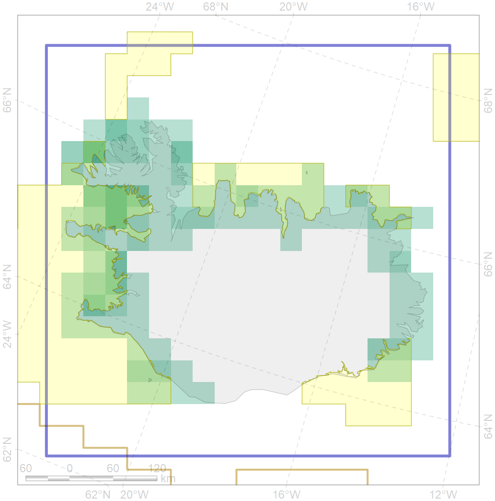
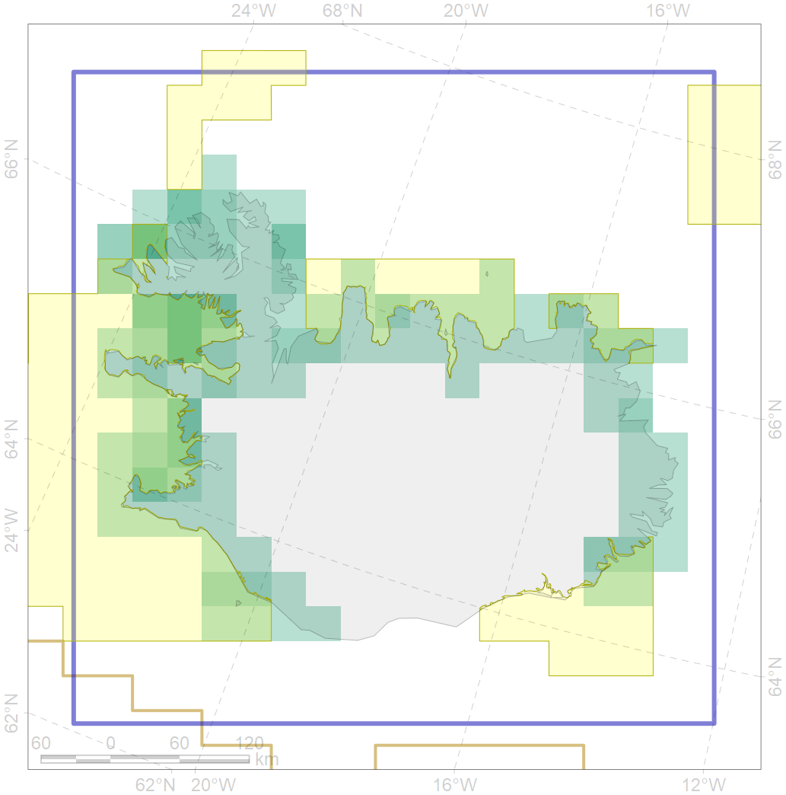

6060
 

| CF code | 6060 |
| CF name | Common eider (Somateria mollissima borealis) Iceland breeding&moulting grounds |
| Time Period | 2000 |
| Source(s) | https://www.ni.is/biota/animalia/chordata/aves/anseriformes/somateria-mollissima |
| Seasonality | May-August |
| Depth Horizon | <50 m |
| Methodology | Field Data |
| Use Restrictions | Open source |
| Author Name | Gavrilo, Tertitski |
| Notes | |
| Scenario’s Target | 0.552 |
| Target Achievement | 0.576 (Scenario: 104.4%) |
| PAC | Share of the Total Amount within the PAC | Share of the Target Achievement for the ArcNet | PAC’s Contribution to the Target Achievement |
|---|---|---|---|
| 38 | 35.2%51.2% | 50.6%66.5% | 48.4%63.7% |
| 39 | 2.0%3.6% | 3.5%6.2% | 3.3%5.9% |
| 40 | 3.5%5.7% | 4.8%7.7% | 4.6%7.4% |
| 41 | 6.0%11.8% | 6.1%9.6% | 5.8%9.2% |
| inner | 46.7%72.2% | 65.0%90.0% | 62.2%86.2% |
| outer | 53.3%93.8% | 39.4%94.6% | 37.8%90.6% |
| † supplement values are for area consistence whereas principal values are for Accenter compatible gridded stats |